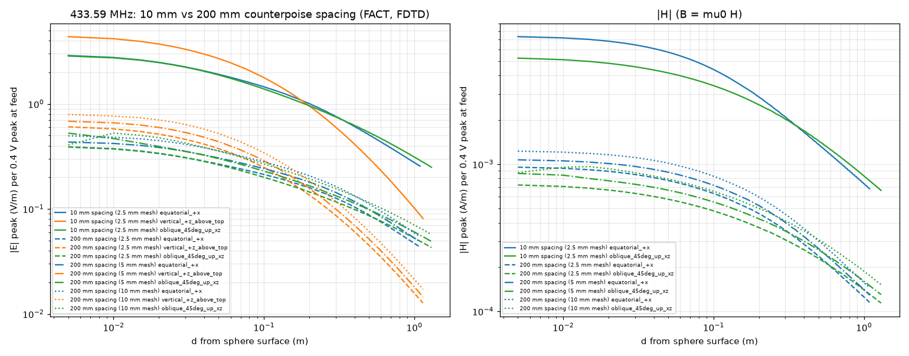
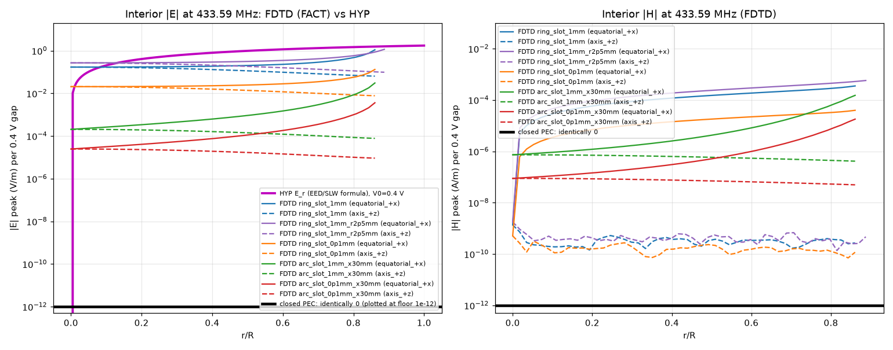

SLW Hub
SLW Hubfx1-snr-v0.2 · FX-1 home experiment · illustrative, not a measurement · Cloud twin pending sync (fx1-snr-v0.2)
FX-1: what should the probe read?
A metal sphere (two 11″ stainless bowls) is driven with a 433.59 MHz radio signal. A small probe connected to a TinySA spectrum analyser sits either inside the sphere or outside it. This page predicts the reading two ways. Standard physics uses Maxwell's equations and an openEMS computer simulation. The EED hypothesis is the unproven "scalar wave" idea being tested.
Loading…
Standard physics (FACT)—
EED hypothesis (HYP, unproven)—
1 · Where is the probe?
Inside, TinySA #2 is sealed in with the probe. Outside, TinySA #3 is on the bench.
2 · How far from the centre?
2 · How far from the sphere's surface?
3 · How well is the seam sealed?
The seam is where the two bowls meet under the copper tape. Any gap lets a little ordinary signal leak in. Only matters when the probe is inside.
4 · How strong is the drive?
dBm is signal power in decibels relative to 1 milliwatt. Every 10 dB is a factor of 10 in power: 0 dBm = 1 mW, −30 dBm = 1 µW.
How it works
The prediction is a chain of four steps. The numbers below are live for your current settings.
- Field at the probe. This is the electric field E, measured in volts per metre (V/m), or the magnetic field B, measured in tesla (T; 1 µT = one millionth of a tesla). Outside the sphere it comes from the openEMS simulation of the real geometry. Inside, it comes from the openEMS simulation of the seam you chose (standard physics) or from the EED formula (hypothesis).
- Probe factor K(f). This is how many dBm the Tekbox probe delivers to the analyser when it sits in a field of exactly 1 V/m (E5 probe) or 1 µT (H probes) at frequency f. It comes from Tekbox's published calibration charts. The probe output is K + 20·log10(field ÷ 1 V/m or 1 µT).
- TinySA noise floor. This is the weakest signal the analyser can show, set by its own electronic noise. It depends on the RBW (resolution bandwidth: how wide a slice of spectrum the analyser listens to at once). A narrower RBW means less noise and a lower floor.
- SNR (signal-to-noise ratio) = probe output − noise floor, in dB. Above about 10 dB you clearly see a peak. Near 0 dB it is lost in the noise. Below 0 dB you see nothing but noise.
Words and symbols
- f: frequency
- How many times per second the drive signal oscillates, in hertz (Hz). 433.59 MHz = 433.59 million times per second.
- λ: wavelength
- The distance a radio wave travels during one oscillation: λ = c ÷ f, where c is the speed of light. At 433.59 MHz, λ ≈ 0.69 m.
- Ω: angular frequency
- Ω = 2πf, the same frequency counted in radians per second (one full cycle = 2π radians). The page writes the shell voltage as V0·cos(Ωt).
- k: wavenumber
- k = 2π ÷ λ = Ω ÷ c. It tells you how fast the wave's phase advances per metre (≈ 9.09 per metre at 433.59 MHz).
- R: sphere radius
- The distance from the centre of the sphere to its wall (0.14 m for the 11″ bowls).
- r: distance from the centre
- How far the probe is from the exact middle of the sphere.
- r/R
- The probe's position as a fraction: 0 = the exact centre, 1 = touching the wall.
- d: distance from the surface
- How far the outside probe is from the metal surface (not the centre).
- kR
- The sphere's size measured in wave units (k × R). kR ≈ 1.27 for the bowls at 433.59 MHz. The EED formula blows up when kR = π (a resonance).
- V0: peak shell voltage
- The largest voltage the drive puts on the shell during each cycle. The page uses V0 = √(2·50 Ω·P), which gives about 0.4 V at +2 dBm.
- dBm
- Power in decibels relative to 1 milliwatt. It is logarithmic: +10 dB = 10× the power, +20 dB = 100×, and −100 dBm is 0.1 picowatt.
- dB
- A ratio in decibels. For fields (volts), a factor of 10 is 20 dB. For power, a factor of 10 is 10 dB.
- RBW: resolution bandwidth
- The width of the frequency slice the TinySA measures at once. The default is 10 kHz.
- Noise floor
- The analyser's own noise level. A signal must be above it to be seen.
- Probe factor
- The probe's calibration: dBm out for a 1 V/m (E probe) or 1 µT (H probe) field.
- E5, H10, H20, H5
- The four Tekbox probes. E5 senses electric field. The H probes sense magnetic field; the number is the loop size in mm.
- Seam / slot
- The joint between the two bowls. A slot is any gap in the metal that signal can leak through.
- openEMS / FDTD
- openEMS is free software that solves Maxwell's equations on a 3-D grid, stepping forward in time (FDTD = finite-difference time-domain). The grid spacing ("mesh", e.g. 2.5 mm) limits accuracy.
- PEC
- Perfect electric conductor: an idealised metal with zero resistance, as used in the simulation.
- Near field / far field
- Close to a source (within about λ/2π ≈ 11 cm here), the fields fall off quickly and are mostly stored energy. Far away they fall off as 1/distance: that is the radiated wave.
- FACT / HYP / ASSUMPTION
- FACT = established physics or published data. HYP = the unproven EED hypothesis. ASSUMPTION = a modelling choice made here that could be wrong.
All controls
Defaults reproduce the page setup. Changing frequency, radius or feed gap away from the simulated geometry switches to the analytic (formula-only) model. That model is clearly labelled, because openEMS shows it reads high at 433 MHz.
Media stack (outside readings only)
These are material layers between the sphere and an outside probe, carried over from the Sleeve SNR simulator. Standard: each layer's shielding adds in dB. HYP: the parent's EED loss rules.
Full tables (all probes)
Each cell is the probe output in dBm, with the SNR in parentheses. "floor" means no signal is predicted. Teal = standard, orange = HYP.
Inside, by r/R (current seam and direction)
Outside, by distance (current exterior model)
Standard physics vs EED (FACT / HYP)
Inside the sphere: the shape is the discriminating measurement
- Standard physics (FACT): a closed metal shell blocks radio fields, so a perfectly sealed sphere has zero field inside. The openEMS simulation confirms this exactly. Any signal inside leaks in through gaps in the seam. That leakage is already present at the centre (finite at r = 0) and is strongest next to the gap. It carries a magnetic field (B ≠ 0) near the slot.
- EED hypothesis (HYP): the page's formula Er(r) = V0·R·[sin kr − kr·cos kr] ÷ (r²·sin kR) gives a purely radial field (pointing straight out from the centre). It is exactly zero at the centre, rises smoothly to the wall, is the same in every direction, and has no magnetic field (B = 0).
- So: move the probe from the centre toward the wall, in several directions. EED predicts a rise from nothing, identical in all directions, and no H-probe signal. Leakage predicts a signal already at the centre that grows mainly toward the seam, and an H-probe signal near the seam.
Outside the sphere
Both views predict a signal outside, because the driven sphere acts as an ordinary antenna. Outside readings therefore do not discriminate between them; they check the drive and the probe chain. The HYP exterior value is the Sleeve SNR carry-over formula (an illustrative cartoon, not a derived EED result).
Equations as coded (identical in FX1SNR.wl)
Drive
P = 10^((P_dBm − 30)/10) W V0 = sqrt(2·50·P) # ASSUMPTION, as the page does: +2 dBm → 0.398 V; −19 dBm → 35.5 mV s = 10^((P_dBm − 2)/20) # openEMS scaling: fields ∝ source voltage (FACT, linear system); tables are per +2 dBm available (50 Ω)
Outside — standard, DEFAULT: openEMS table FACT ±15%
points (d_i, E_i, B_i): equatorial samples d = 0.05, 0.1, 0.2, 0.5, 1.0 m + NF2FF far field at r = 3 m, 10 m (d = r − R) between samples: ln E and ln B linear in ln d (log-log interpolation) beyond the last point: E = E_last·(R + d_last)/(R + d) (far field ∝ 1/r, FACT) closer than 5 cm: no data → analytic model (labelled) E = s·E_table(d), B = s·B_table(d) used when f = 433.59 MHz, R = 0.14 m, counterpoise on, gap = 20 cm (page geometry) — or gap = 1 cm at 433.59/1296/2450 MHz (10 mm feed-gap runs)
Inside — standard, DEFAULT: openEMS seam tables FACT, order-of-magnitude
closed seam: E = 0, B = 0 (FDTD identically zero)
slot cases: |E|(r/R), |B|(r/R) sampled at r/R = 0, 0.25, 0.5, 0.7, 0.9 along the chosen direction
between samples: ln|E| linear in r/R (linear if a sample is 0); beyond the last sample: held
E_leak = s·|E|(r/R), B_leak = s·|B|(r/R)
only f = 433.59 MHz, R = 0.14 m; otherwise the v0.1 analytic model below ("analytic only")
Inside — standard, analytic fallback (v0.1) FACT forms + ASSUMPTIONS
E_ref = V0/R ; SE_wall = A + R + B (Schelkunoff slab) ; SE_seam = max(0, 20log10(λ/(2l)) − 10log10 n) for l < λ/2 (Ott 2009 §6.6) SE_shell = −10log10(10^(−SE_wall/10) + 10^(−SE_seam/10)) # ASSUMPTION incoherent sum E_leak = E_ref·10^(−SE_shell/20) (uniform in r) ; B_leak = E_leak/c # ASSUMPTIONS
Inside — EED HYP (future-scalar-ab.html#eed, exactly)
E_r(r) = V0 R [sin kr − kr cos kr] / (r² sin kR), k = 2πf/c, E_r(0) = 0 B = 0 ; tangential E = 0 ; resonance at kR = π. Standard cavity modes: TM101 kR = 2.744, TE101 kR = 4.493 (FACT)
Outside — analytic comparison models
Q = 4πε0 R V0 A: E = V0 R / r_c² (isolated sphere, quasi-static) B: uniform current I0 = ωQ on a line from image centre to sphere centre, 400 Hertzian elements (Balanis Eq. 4-8/4-10), power-limited C: single Hertzian dipole I·l = ω(2h_c Q) at the counterpoise, power-limited probe at sphere-centre height h_c = gap + R, horizontal distance r_c = R + d
Outside — HYP (SleeveBalunSNR carry-over)
P_rad = I_pk² Z0/(4π) ; S = P_rad/(4π r_c²)·exp(−αL) ; E∥ = sqrt(S·Z0) ; B = 0 # HYP / illustrative
Probe → TinySA → SNR
P_probe = K(f) + 20log10(field/ref) − stack_dB ref = 1 V/m (E5) or 1 µT (H probes) floor = −102 dBm + 10log10(RBW/30 kHz) (no LNA) ; −145 dBm + 10log10(RBW/200 Hz) (LNA) SNR = P_probe − floor ; displayed reading = 10log10(10^(P/10) + 10^(floor/10))
openEMS cross-check
FACT (for an assumed geometry): openEMS FDTD simulations of a perfectly conducting sphere (R = 0.14 m) above a 0.35 m square counterpoise, run by a separate worker. Results: /workspace/sim-lab/fx1/openems/results.json. Values are per +2 dBm available from a 50 Ω source and are scaled with drive voltage (×10(P−2)/20).
Outside: openEMS vs the analytic formulas
openEMS fields vs distance: 10 mm vs 200 mm spacing (433.59 MHz)

Per 0.4 V peak at the feed. The page geometry (200 mm spacing, dashed and dotted) gives much weaker fields per volt than a sphere fed directly across a 10 mm gap. Curves for the 10, 5 and 2.5 mm meshes differ by 12–34%. This is the basis of the ±15% label on the finest (2.5 mm) run.
Inside: openEMS seam leakage (per r/R, current drive)
Labelled FACT but order-of-magnitude: PEC walls, a stair-stepped sphere, not mesh-converged (the 1 mm ring slot changes about 1.6× between the 5 mm and 2.5 mm meshes). A "U" marks a sample within 2 grid cells of the slot opening, where the field is unresolved. The slot runs used the 10 mm feed-gap geometry at equal available power (ASSUMPTION; see Assumptions).
Interior |E| and |H| at 433.59 MHz: openEMS vs EED

Magenta = EED formula (zero at the centre, rising to the wall). Solid lines = toward the slot, dashed = along the vertical axis. A closed PEC shell gives exactly zero, drawn at the 10−12 plot floor.
Other openEMS datasets (10 mm feed gap: 433.59, 1296, 2450 MHz)
These use a different geometry: the sphere is fed directly across a 10 mm gap just above the counterpoise, not the page's 200 mm wire feed. They are used only when you set the gap to 1 cm (All controls). At 1296 and 2450 MHz, openEMS data exist only for this geometry, so the 20 cm page geometry falls back to the analytic model there.
v0.1 merged reference dump (10 mm geometry vs v0.1 analytic)
Merged from openems/results.json (2026-09-25 11:38 UTC; openEMS v0.37.0-rc3-11-g12cd91d / CSXCAD v0.7.0-rc3-1-gbd2c133 (FDTD); scripts in /workspace/sim-lab/fx1/openems). FACT = Maxwell FDTD of an assumed geometry: FDTD (openEMS) of PEC sphere R=0.14 m + 0.35 m square counterpoise, 10 mm feed gap; Zin=14.7+j24.8 ohm, S11=-4.11 dB; normalisation per_2dBm_available_50ohm. Probe on the horizontal ray from the sphere centre; r = R + d. Radiated/accepted power ratio from NF2FF = 1.012 (≈1 ⇒ lossless PEC; consistent). Full reference dump of the 10 mm feed-gap run vs the analytic models. In fx1-snr-v0.2 the engine default uses engine.openems (page 200 mm geometry + seam tables).
| d from wall | openEMS |E| V/m | JS-B |E| (gap 20 cm) | JS-B |E| (gap 10 mm, openEMS geometry) | JS-A |E| | openEMS |B| T | JS-B |B| (gap 10 mm) | E5 openEMS dBm | E5 JS-B (10 mm) dBm | H10 openEMS dBm | H10 JS-B (10 mm) dBm | H20 openEMS dBm | H20 JS-B (10 mm) dBm | H5 openEMS dBm | H5 JS-B (10 mm) dBm |
|---|---|---|---|---|---|---|---|---|---|---|---|---|---|---|
| 5 cm | 1.587e+0 | 1.195e+0 | 2.023e+0 | 1.544e+0 | 5.995e-9 | 6.672e-9 | -54.4 | -52.3 | -51.6 | -50.6 | -44.9 | -44.0 | -70.8 | -69.9 |
| 10 cm | 1.206e+0 | 1.033e+0 | 1.684e+0 | 9.676e-1 | 4.574e-9 | 5.782e-9 | -56.8 | -53.9 | -53.9 | -51.9 | -47.2 | -45.2 | -73.2 | -71.2 |
| 20 cm | 8.364e-1 | 8.587e-1 | 1.307e+0 | 4.821e-1 | 2.978e-9 | 4.576e-9 | -60.0 | -56.1 | -57.6 | -53.9 | -51.0 | -47.2 | -76.9 | -73.2 |
| 50 cm | 4.203e-1 | 6.461e-1 | 8.031e-1 | 1.361e-1 | 1.414e-9 | 2.757e-9 | -65.9 | -60.3 | -64.1 | -58.3 | -57.4 | -51.6 | -83.4 | -77.6 |
| 100 cm | 2.288e-1 | 4.771e-1 | 4.801e-1 | 4.289e-2 | 7.668e-10 | 1.619e-9 | -71.2 | -64.8 | -69.4 | -62.9 | -62.8 | -56.3 | -88.7 | -82.2 |
| 3 m from centre (NF2FF) | 8.699e-2 | 2.191e-1 | 1.878e-1 | — | 2.902e-10 | — | -79.6 | -72.9 | -77.9 | -71.2 | -71.2 | -64.5 | -97.1 | -90.4 |
| 10 m from centre (NF2FF) | 2.610e-2 | 6.819e-2 | 5.662e-2 | — | 8.705e-11 | — | -90.1 | -83.3 | -88.3 | -81.6 | -81.7 | -74.9 | -107.6 | -100.9 |
Interior (FDTD, equatorial ray, per_2dBm_available_50ohm): closed_pec_r10mm |E| at r/R 0.00/0.25/0.50/0.70/0.82 = 0.000e+0, 0.000e+0, 0.000e+0, 0.000e+0, 0.000e+0 V/m; closed_pec_r5mm |E| at r/R 0.00/0.25/0.50/0.70/0.90 = 0.000e+0, 0.000e+0, 0.000e+0, 0.000e+0, 0.000e+0 V/m; closed_pec_r2p5mm |E| at r/R 0.00/0.25/0.50/0.70/0.90 = 0.000e+0, 0.000e+0, 0.000e+0, 0.000e+0, 0.000e+0 V/m; closed_pec_r5mm_compact |E| at r/R 0.00/0.25/0.50/0.70/0.90 = 0.000e+0, 0.000e+0, 0.000e+0, 0.000e+0, 0.000e+0 V/m; ring_slot_1mm |E| at r/R 0.00/0.25/0.50/0.70/0.90 = 1.452e-1, 1.500e-1, 1.726e-1, 2.447e-1, 7.571e+0 V/m; ring_slot_1mm_r2p5mm |E| at r/R 0.00/0.25/0.50/0.70/0.90 = 2.301e-1, 2.370e-1, 2.685e-1, 3.582e-1, 1.187e+0 V/m; ring_slot_0p1mm |E| at r/R 0.00/0.25/0.50/0.70/0.90 = 1.725e-2, 1.784e-2, 2.060e-2, 2.937e-2, 8.056e+0 V/m; arc_slot_1mm_x30mm |E| at r/R 0.00/0.25/0.50/0.70/0.90 = 1.714e-4, 3.256e-4, 7.688e-4, 2.435e-3, 2.671e-1 V/m; arc_slot_0p1mm_x30mm |E| at r/R 0.00/0.25/0.50/0.70/0.90 = 2.054e-5, 3.918e-5, 9.312e-5, 2.936e-4, 2.961e-1 V/m. JS standard leak (Schelkunoff wall ⊕ Ott seam, uniform, ASSUMPTION): 4.113e-2 V/m; JS HYP E_r at r/R 0.7: 1.319e+0 V/m. Closed PEC shell ⇒ interior exactly 0 in FDTD (FACT check of E=B=0).
Assumptions & open questions
- Drive (ASSUMPTION, as the page): V0 = √(2·50·P) (+2 dBm → 0.398 V peak) sets the EED interior amplitude. openEMS says the feed port of the page geometry actually sees 0.776 V peak at +2 dBm available. Most of that is across the badly mismatched wire feed (Zin ≈ 353 − j761 Ω, S11 −0.43 dB, only ≈151 µW of 1.58 mW accepted).
- Exterior default (FACT ±15%): openEMS 2.5 mm-mesh run of the page geometry. It is not mesh-converged: 5 mm vs 2.5 mm differ 12–17%, and the thin feed wire's radius makes Zin sensitive. Between samples the values are interpolated log-log in distance. Beyond 10 m they are extended as 1/r (far field). Closer than 5 cm there are no data, so the analytic model is used and labelled.
- Analytic exterior models (comparison only): at 433.59 MHz and a 20 cm gap, Model B reads 2.3–5× higher than openEMS. For frequencies or radii with no openEMS data, the page shows the analytic model with the label "analytic only — openEMS shows it reads high at 433 MHz".
- Seam (ASSUMPTION): the default is one 30 mm × 1 mm gap in the tape. This replaces v0.1's assumed 5 mm analytic seam. The real seam is unknown: well-bonded copper tape may act closed, while non-conductive adhesive plus clips may behave like a slot.
- Interior leakage transfer (ASSUMPTION): the slot runs used the 10 mm feed-gap geometry. They are applied to the page geometry at equal available power. In openEMS the exterior fields of the 200 mm geometry are 0.33–0.40× the 10 mm ones, so interior leakage is probably overestimated by roughly 2.5–3×. That is conservative against falsely claiming an EED signal.
- Magnetic field inside: on the vertical axis the openEMS |B| samples (~10−15 T) are numerical noise, effectively zero. Near the slot, |B| is real and gives an H-probe signal that EED says should not exist (EED has B = 0).
- Walls: openEMS uses PEC walls. A real 0.5 mm 304 stainless wall adds a separate path through the metal that is far below every slot (skin depth ≈ 20 µm at 433 MHz).
- Probe (FACT data, ASSUMPTION use): Tekbox curves are for EMC sniffing and the probe itself disturbs the field. Peak amplitude is used, as on the page. The H20 manual curve and the FAQ formula disagree by ~13 dB at 433 MHz.
- Noise floor (ASSUMPTION): the TinySA spec is given at 30 MHz and is applied here at 433 MHz–3 GHz.
- Open questions: the real seam gap and whether the tape bonds electrically; how the tethered inside analyser and its battery perturb the interior; the probe's orientation relative to the slot; mesh convergence below 2.5 mm; a real-wall (lossy) FDTD run; openEMS runs of the 200 mm geometry at 1296 and 2450 MHz.
Sources
- Setup, EED formula and page figures: future-scalar-ab.html#home-experiment (FX-1, draft, HYP) and #eed. Hively–Loebl 2019 extended electrodynamics (SLW has B = 0).
- openEMS FDTD (Liebig, openems.de): runs and scripts in
/workspace/sim-lab/fx1/openems/(results.json, README.md, tables.md); data embedded in physics-constants-fx1.json → engine.openems. - Parent media stack and HYP Ohmic rules: sleeve-balun-snr.html / SleeveBalunSNR.wl (
snr-dual-sim-params-v0.2). - Tekbox: TBPS01/TBWA2 manual V2.2 (pp. 2–3) · FAQ Near Field Probes V1.1 (p. 2).
- TinySA Ultra: tinysa.org TinySA4.Specification.
- Materials: UPMET 304 · MatWeb Al 3003-H14 · Polymers 13:2658 (HDPE).
- Standard EM: Schelkunoff (1943) / H. W. Ott, Electromagnetic Compatibility Engineering (Wiley 2009) ch. 6; C. A. Balanis, Antenna Theory 3e §4.2, §4.7; Harrington, Time-Harmonic EM Fields §6-9.
Version & sync
PhysicsVersion fx1-snr-v0.2 · 25 Sep 2026.
Cloud twin pending sync (fx1-snr-v0.2). The Wolfram twin wolframcloud.com/obj/danbritton5/FX1SNR is not yet republished. wolfram/FX1SNR.wl in this repo carries the same constants, including the embedded openEMS tables, and the same version, and is ready to CloudPublish. GitHub may run ahead of Cloud under the 2026-09-25 publishing rule. The gap is logged in the hub sync ledger.
- Single source of truth: physics-constants-fx1.json.
check_constants.mjsasserts bit-identical constants in the JS and WL twins. - Independent Python re-implementation (
py_check.py) matchesjs_outputs.jsonover the full grid (see PHYSICS_LOCK.md). - v0.2 changes: openEMS 200 mm page-geometry fields are the default exterior model (FACT ±15%). openEMS seam options replace the assumed 5 mm analytic seam inside. The analytic models moved to a comparison role. The page was rebuilt with a simple front and details tabs for novice and iPad viewing.
- v0.1 (PR #49): first release, with analytic exterior (Model B) and analytic 5 mm seam.
fx1-snr-v0.2 · Dan Britton SLW Hub · Cloud twin pending sync (fx1-snr-v0.2) · Educational, contested, illustrative.